data = [
{score: "0-3", count: 0},
{score: "4-6", count: 5},
{score: "7-9", count: 5},
{score: "10-12", count: 4},
{score: "13-15", count: 1}
]
Plot.plot({
marks: [
Plot.barY(data, {x: "score", y: "count", fill: "#4a90d9"}),
Plot.ruleY([0])
],
x: {label: "Score Range"},
y: {label: "Number of Students"},
title: "Test 1 Score Distribution (n=15)",
width: 500,
height: 300
})Lecture 1: Getting Started with GitHub
In this lectures I will give overview of the course: what we will cover and what we will learn. This lecture will also guide you through setting up GitHub and GitHub Codespaces. We’ll use Codespaces as our development environment - it works on any computer (Chromebook, Windows, Mac) with just a web browser.
TipGet Gemini
We will use agentic AI extensively. Get Gemini for Stundets now.
Why Version Control?
Version control systems track changes to your files over time. This allows you to:
- Revert to previous versions if something goes wrong
- Collaborate with others without overwriting each other’s work
- Track who made what changes and when
- Backup your work to the cloud automatically
Git is the most popular version control system, and GitHub is a cloud platform for hosting Git repositories.
Section 1: Create a GitHub Account
Step 1: Sign Up
- Go to github.com
- Click Sign up
- Enter your email address (use your PSU email for educational benefits)
- Create a password
- Choose a username (this will be visible publicly)
- Complete the verification puzzle
- Click Create account
TipEducational Benefits
Using your .edu email gives you access to GitHub Education, which includes free GitHub Pro features, free access to various developer tools, and GitHub Copilot.
Step 2: Verify Your Email
- Check your email inbox for a verification email from GitHub
- Click the verification link
- You now have a GitHub account!
Section 2: Create Your First Repository
A repository (or “repo”) is a folder that Git tracks. Let’s create one:
- Go to github.com and log in
- Click the + icon in the top right → New repository
- Enter a repository name:
my-first-repo - Add a description (optional)
- Select Public
- Check Add a README file
- Click Create repository
You now have a repository on GitHub!
Section 3: Open a Codespace
GitHub Codespaces gives you a complete development environment in your browser. No software installation needed!
Step 1: Open Codespace
- Go to your new repository on GitHub
- Click the green Code button
- Select the Codespaces tab
- Click Create codespace on main
Wait about 30 seconds for your Codespace to start. You’ll see VS Code running in your browser!
Step 2: Explore the Interface
Your Codespace has:
- File Explorer (left sidebar) - browse and create files
- Editor (center) - write and edit code
- Terminal (bottom) - run commands
Step 3: Open the Terminal
If the terminal isn’t visible:
- Click Terminal in the menu bar
- Select New Terminal
Or press Ctrl+` (backtick)
Section 4: Configure Git
Git needs to know who you are. In the terminal, run:
git config --global user.name "Your Name"
git config --global user.email "your.email@psu.edu"Replace with your actual name and PSU email.
Verify it worked:
git config --list
Note
In Codespaces, Git is already installed and connected to your GitHub account. No SSH setup needed!
Section 5: Basic Git Workflow
The basic Git workflow follows this pattern:
Edit files → Stage changes → Commit → PushMake a Change
- Click on
README.mdin the file explorer - Add some text, like: “This is my first repository!”
- Save the file (Ctrl+S or Cmd+S)
Check Status
In the terminal, see what changed:
git statusYou’ll see README.md listed as modified.
Stage Changes
Add the file to be committed:
git add README.mdOr add all changes:
git add .Commit Changes
Save your changes with a message:
git commit -m "Update README with description"
TipWriting Good Commit Messages
- Use present tense: “Add feature” not “Added feature”
- Be specific: “Fix login button color” not “Fix bug”
- Keep it short (50 characters or less)
Push to GitHub
Upload your commit to GitHub:
git pushGo to your repository on GitHub and refresh - you’ll see your changes!
Pull from GitHub
If changes were made elsewhere, download them:
git pullSummary
You’ve learned:
| Command | Description |
|---|---|
git config |
Set up your identity |
git status |
Check what’s changed |
git add |
Stage changes |
git commit |
Save changes |
git push |
Upload to GitHub |
git pull |
Download from GitHub |
Key Points
- GitHub Codespaces works on any computer with a browser
- No software installation needed - everything runs in the cloud
- The basic workflow is: edit → stage → commit → push
- Good commit messages help you and others understand changes
Next Steps
- Complete the GitHub Hello World tutorial
- Learn about Pull Requests for collaboration
In-Class Test: Foundations
ImportantInstructions
Select your answer for each question. Your answers are saved automatically in your browser. When finished, click “Submit Answers” to generate your submission code.
Python Questions
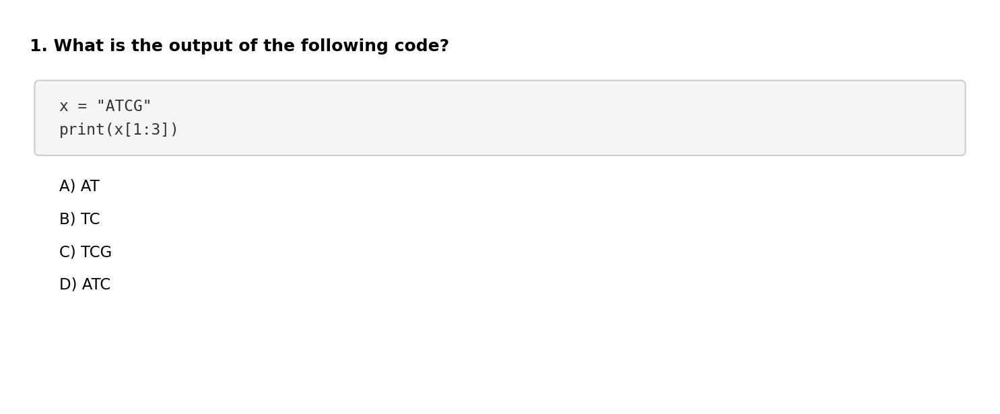
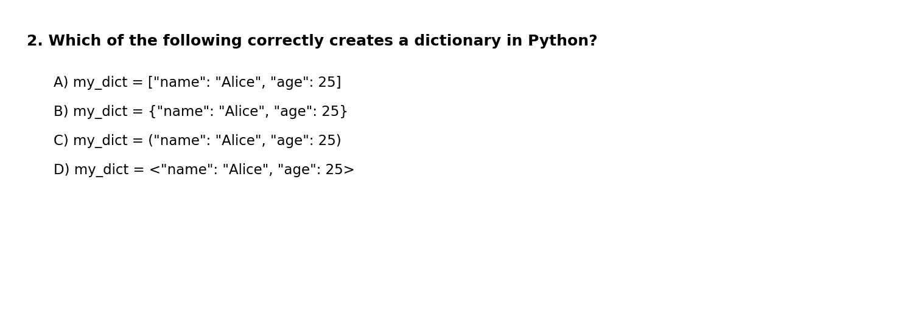
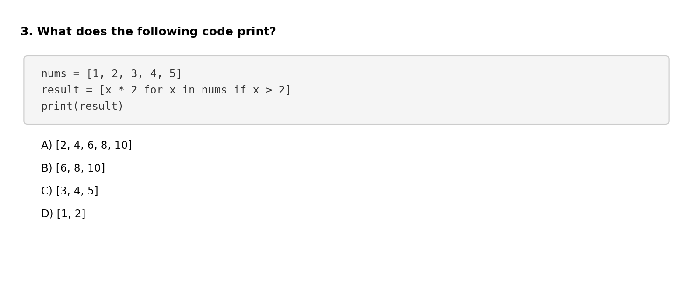
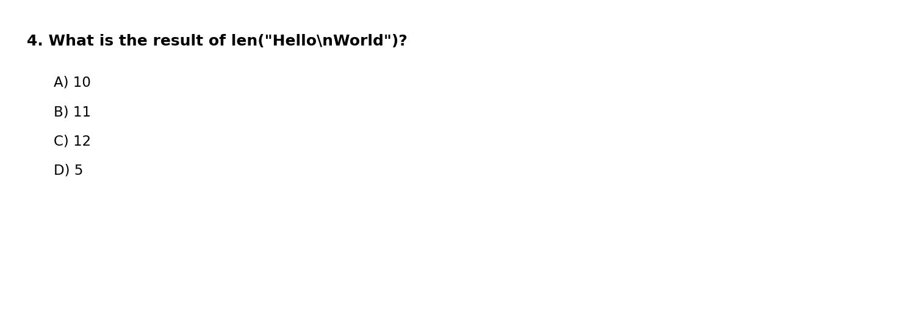
Bash Questions
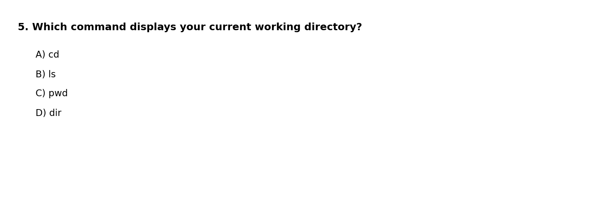
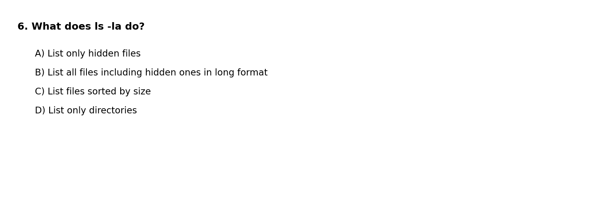
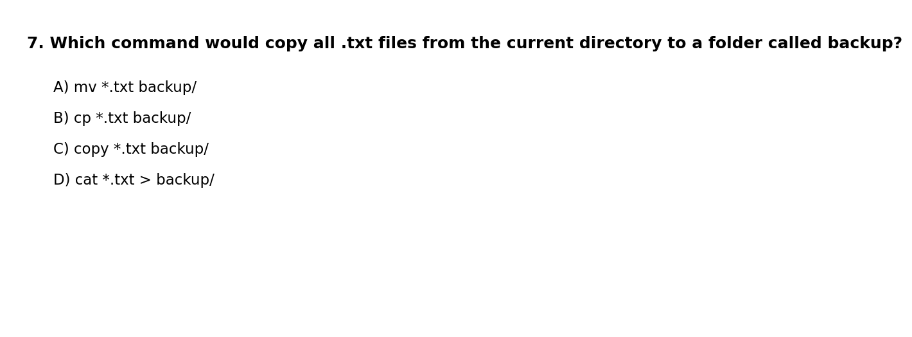
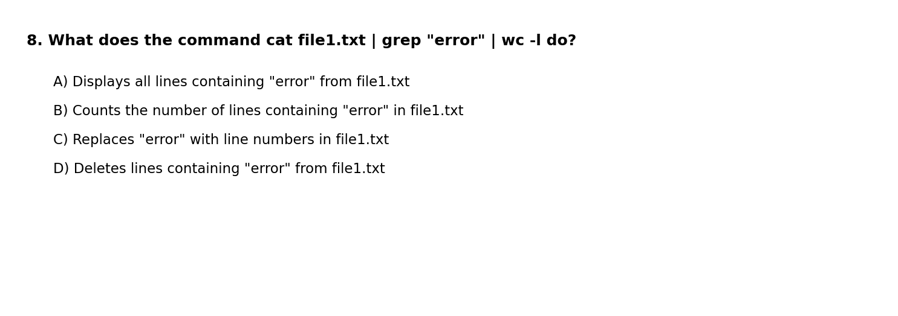
Git Questions
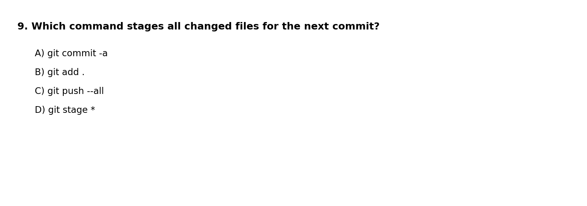
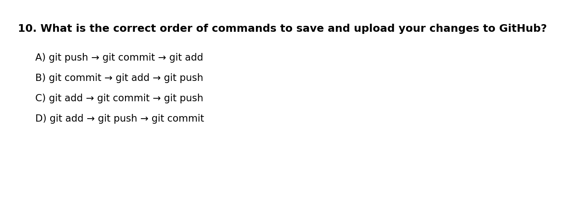
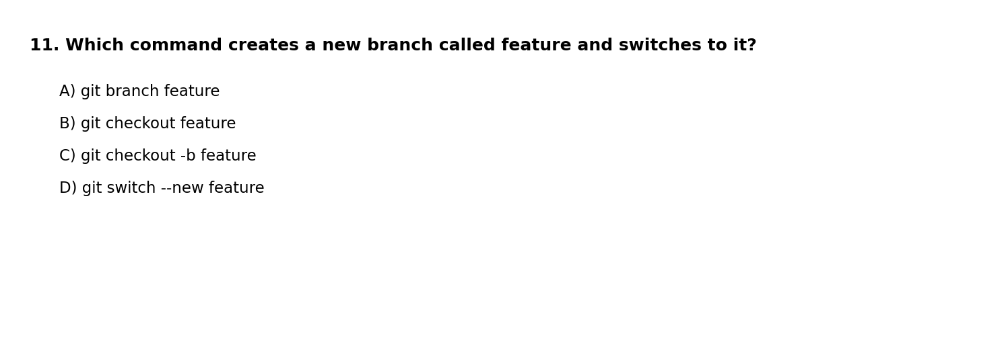
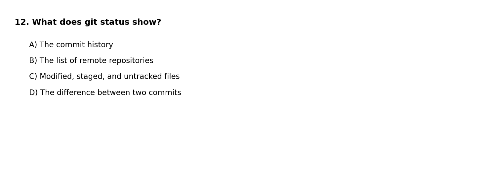
Agentic CLI Questions
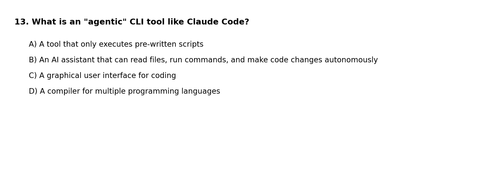
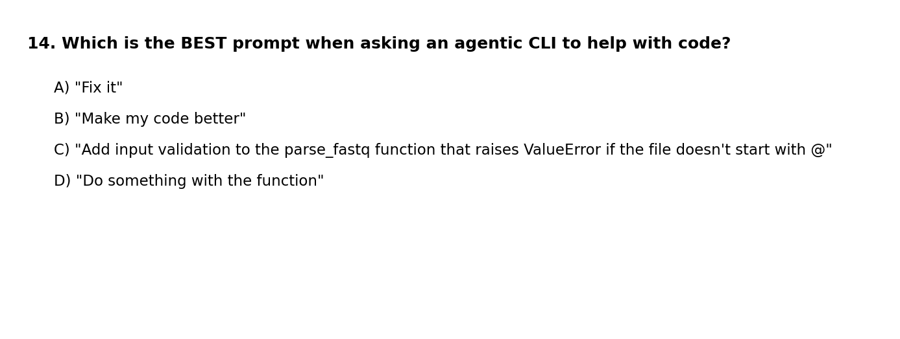
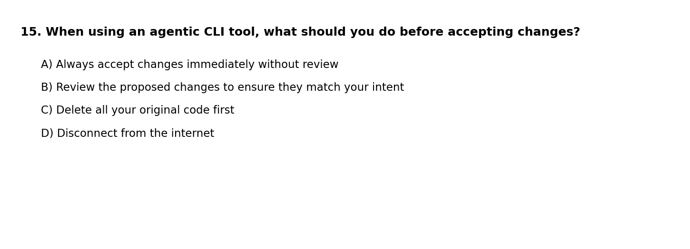
Submit Your Answers
Enter your student ID and click Submit to generate your submission code.
Copy this code and email it to your instructor at aun1@psu.edu:
Test Results Summary
Summary Statistics:
- Students: 15
- Average: 8.1/15 (54.2%)
- Median: 8/15
- Range: 5-13/15
Per-Question Analysis:
| Question | Correct | Incorrect | % Correct |
|---|---|---|---|
| 1 | 3 | 12 | 20% |
| 2 | 9 | 6 | 60% |
| 3 | 13 | 2 | 87% |
| 4 | 5 | 10 | 33% |
| 5 | 5 | 10 | 33% |
| 6 | 10 | 5 | 67% |
| 7 | 12 | 3 | 80% |
| 8 | 3 | 12 | 20% |
| 9 | 4 | 11 | 27% |
| 10 | 6 | 9 | 40% |
| 11 | 6 | 9 | 40% |
| 12 | 9 | 6 | 60% |
| 13 | 12 | 3 | 80% |
| 14 | 11 | 4 | 73% |
| 15 | 14 | 1 | 93% |
Analysis by Topic:
Students performed strongest on Agentic CLI concepts (Q13-15, avg 82%), with excellent understanding of reviewing changes before accepting them (Q15, 93%) and writing good prompts (Q14, 73%). Python questions (Q1-4, avg 50%) showed solid results on list comprehensions (Q3, 87%) and dictionary syntax (Q2, 60%), though string slicing (Q1, 20%) needs review. Bash performance (Q5-8, avg 50%) was mixed—students understood file copying (Q7, 80%) and ls -la (Q6, 67%), but pipe commands (Q8, 20%) need reinforcement. Git questions (Q9-12, avg 42%) were the weakest area, with students grasping git status (Q12, 60%) but struggling with git add . (Q9, 27%) and the add-commit-push workflow (Q10, 40%).